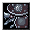
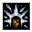
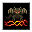
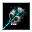
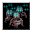
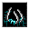

フラグ別の呪文の一覧 List of spells by flag
英語版 CrawlWiki の記事「List of spells by flag」(0.33 向け、2025-05-11 版)の翻訳です。原文の著者は編集履歴をご覧ください。
この記事は 0.33 の時点の内容で、最新の 0.34 とは違うところがあるかもしれません。
Crawl で習得できる呪文をすべて、フラグ(flag)ごとに分けて並べた一覧。各フラグの説明も載せている。
目次
- 1 狙い方
- 2 信仰
- 3 呪文
- 3.1 フラグなし(No flags)
- 3.2 意志力判定(Will check)
- 3.3 マスを狙う(Aim at space)
- 3.4 範囲(Area)
- 3.5 混沌(Chaotic)
- 3.6 雲(Cloud)
- 3.7 破壊(Destructive)
- 3.8 方向・対象指定(Dir or target)
- 3.9 逃走(Escape)
- 3.10 性急(Hasty)
- 3.11 有益(Helpful)
- 3.12 退散可能(Mons abjure)
- 3.13 射線の確認が必要(Needs tracer)
- 3.14 幽霊に引き継がれない(No ghost)
- 3.15 騒音(Noisy)
- 3.16 自分は対象外(Not self)
- 3.17 物体指定(Obj)
- 3.18 遠い相手を優先(Prefer farthest)
- 3.19 自己強化(Selfench)
- 3.20 無音(Silent)
- 3.21 対象指定(Target)
- 3.22 不浄(Unclean)
- 3.23 邪悪(Unholy)
- 3.24 補助(Utility)
- 4 関連項目
狙い方
打擲型の呪文には対象指定フラグが付いている。収拾は変わり種で、生き物ではなく物体を「打擲」する(物体指定)。光線型の呪文には方向・対象指定が付く。自分は対象外フラグがあると、自分自身や自分のいるマスは狙えない。火柱の幻出が生き物のいるマスを狙えないのはフラグによるものではなく、特例として扱われている。
有益フラグは、狙いをつけるときの = と - コマンドが最初にどの相手を順に選ぶか(敵、すべて、味方)を左右する。もっとも、狙いをつける画面で control-F を押せばいつでも切り替えられる。
信仰
邪悪、混沌、不浄、性急のフラグが付いた呪文を使うと、一部の神の機嫌を損ねる(死霊術の呪文もフラグに関係なく同様)。詳しくは下の説明を参照。
呪文
| アイコン | 名前 | 系統 | レベル | 威力の 上限 |
射程 | 騒音 | フラグ | 魔法書 |
|---|---|---|---|---|---|---|---|---|
フラグなし(No flags) | ||||||||
| 狐火 | 妖術/炎の魔術 | 1 | 25 | 1 | 猛火の魔法書 | |||
| 小動物の召喚 | 召喚術 | 1 | 25 | 1 | 招集の魔法書 悪戯の魔法書 | |||
| 棘射出機の建造 | 鍛造術 | 2 | 50 | 2 | 応用建築の手引書 罠の論考 | |||
| 犬族のしもべの召喚 | 召喚術 | 3 | 100 | 3 | 招集の魔法書 狩人の魔法書 | |||
| 束縛の印 | 呪術 | 3 | 100 | 3 | 狩人の魔法書 罠の論考 | |||
| 氷の獣の召喚 | 氷の魔術/召喚術 | 3 | 100 | 3 | 獣の魔法書 凍土の魔法書 | |||
| 鎧の覚醒 | 地の魔術/鍛造術 | 4 | 50 | 4 | 城塞の魔法書 鉄の魔法書 | |||
| 灼心のゴーレムの鍛造 | 炎の魔術/鍛造術 | 4 | 100 | 4 | 危険な友の魔法書 応用建築の手引書 | |||
| 稲妻の渦巻の鍛造 | 風の魔術/鍛造術 | 4 | 100 | 4 | 伝導の写本 嵐の魔法書 | |||
| 殉教者の弔鐘 | 死霊術/召喚術 | 4 | 100 | 4 | 腐朽の魔法書 反生命の魔法書 | |||
| セイスモサウルスの卵の召喚 | 地の魔術/召喚術 | 4 | 100 | 4 | 獣の魔法書 荒野の魔法書 | |||
| アリステイアの酩酊 | 錬金術 | 5 | 150 | 5 | 大魔術師列伝 第二巻 パーティートリックの魔法書 | |||
| アリステイアの歩く蒸留器 | 錬金術/鍛造術 | 5 | 100 | 5 | からくりの魔法書 金属細工の魔法書 | |||
| 霧氷の砲撃 | 鍛造術/氷の魔術 | 5 | 200 | 5 | 攻城術大全 氷造形の魔法書 | |||
| ドライアドの召喚 | 召喚術/転位術 | 5 | 200 | 10 | 沼沢の書 荒野の魔法書 | |||
| 魔術の球雷 | 風の魔術/妖術 | 6 | 200 | 25 | 混沌の魔法書 天球の魔法書 | |||
| 君主爆弾の鍛造 | 炎の魔術/鍛造術 | 6 | 200 | 6 | 爆破の魔法書 からくりの魔法書 | |||
 |
ファランクス甲虫の鍛造 | 鍛造術 | 6 | 200 | 6 | 城塞の魔法書 金属細工の魔法書 | ||
| サボテンの巨人の召喚 | 召喚術 | 6 | 200 | 6 | 灼熱の魔法書 荒野の魔法書 | |||
| ダイヤモンドの丸鋸 | 鍛造術 | 7 | 200 | 7 | からくりの魔法書 罠の論考 | |||
| 多重攻撃 | 転位術 | 7 | 200 | 7 | 戦いの魔法書 次元歪曲の魔法書 | |||
| 魔火花の従者 | 妖術/鍛造術 | 7 | 200 | 7 | 危険な友の魔法書 力の魔法書 | |||
| ドラゴンの呼び声 | 召喚術 | 9 | 200 | 15 | ドラゴンの魔法書 | |||
意志力判定(Will check) | ||||||||
| 効果を出すには、対象の魔法抵抗による判定を通らなければならない。 | ||||||||
| 減速 | 呪術 | 1 | 25 | LOS | 1 | 意志力判定、方向・対象指定、射線の確認が必要 | 衰弱の魔法書 | |
| 魂の破片 | 死霊術 | 1 | 25 | 5 | 1 | 意志力判定、方向・対象指定、射線の確認が必要、自分は対象外 | 死霊術の魔法書 反生命の魔法書 | |
| 魔法の眠り | 呪術/氷の魔術 | 2 | 50 | LOS | 0 | 意志力判定、方向・対象指定、射線の確認が必要、自分は対象外、無音 | 夜盗の魔法書 夢幻の魔法書 | |
| 混乱の一撃 | 呪術 | 3 | 100 | 3 | 意志力判定、自己強化 | 衰弱の魔法書 接触の魔法書 | ||
| 内なる炎 | 炎の魔術/呪術 | 3 | 100 | LOS | 3 | 意志力判定、破壊、自分は対象外、対象指定 | 炎の魔法書 自然発火の魔法書 | |
| 他者のテレポート | 転位術 | 3 | 100 | LOS | 3 | 意志力判定、逃走、自分は対象外、対象指定 | 置換の魔法書 行きて帰りし書 | |
| ツキマーの舞踏 | 呪術 | 3 | 100 | LOS | 3 | 意志力判定、方向・対象指定、射線の確認が必要、自分は対象外 | 大魔術師列伝 第七巻 武器の魔法書 | |
| 苦悩 | 呪術/死霊術 | 4 | 200 | LOS | 4 | 意志力判定、範囲 | 夢幻の魔法書 呪術の魔法書 | |
| 恐慌の喚起 | 呪術 | 4 | 200 | LOS | 4 | 意志力判定、範囲 | ドラゴンの魔法書 呪術の魔法書 | |
| 石化 | 錬金術/地の魔術 | 4 | 200 | 6 | 4 | 意志力判定、方向・対象指定、射線の確認が必要 | 怠惰の魔法書 変成の魔法書 | |
| 苦悶の呪い | 死霊術 | 5 | 100 | 4 | 5 | 意志力判定、方向・対象指定、射線の確認が必要、自分は対象外 | 疾病の魔法書 感覚の魔法書 | |
| 衰弱 | 呪術 | 7 | 200 | LOS | 7 | 意志力判定、方向・対象指定、射線の確認が必要 | 呪術の魔法書 災難の魔法書 | |
| 精神不和 | 呪術 | 8 | 200 | 8 | 意志力判定、範囲、性急 | 混沌の魔法書 奔放なる論集 | ||
マスを狙う(Aim at space) | ||||||||
| 何もないマスを狙う呪文。そのため、狙いをつけるときにモンスターへ自動で照準が合うことはない。 | ||||||||
| ゴルブリアの通り道 | 転位術 | 4 | 100 | 2-8 | 8 | マスを狙う、逃走、自己強化、対象指定 | 大魔術師列伝 第七巻 月の魔法書 | |
| ゲルのガヴォット | 転位術 | 6 | 200 | 1 | 6 | マスを狙う、対象指定 | 移動の魔法書 行きて帰りし書 | |
範囲(Area) | ||||||||
| 一定の範囲に害を及ぼす呪文。鎮められて逃げていくモンスターは、このフラグの付いた緊急用の呪文を使わない。 | ||||||||
| 空電放射 | 風の魔術/妖術 | 2 | 50 | 1 | 2 | 範囲 | 嵐の魔法書 | |
| 凍てつく城壁 | 氷の魔術 | 3 | 50 | 2 | 8 | 範囲、破壊、幽霊に引き継がれない | 冷気の魔法書 冬の魔法書 | |
| 雹の嵐 | 妖術/氷の魔術 | 3 | 100 | 3 | 3 | 範囲 | 冷気の魔法書 凍土の魔法書 | |
| 悪臭の雲 | 風の魔術/錬金術/妖術 | 3 | 100 | 4 | 15 | 範囲、雲、方向・対象指定、射線の確認が必要 | 感覚の魔法書 トリスメギストス写本 | |
| 苦悩 | 呪術/死霊術 | 4 | 200 | LOS | 4 | 意志力判定、範囲 | 夢幻の魔法書 呪術の魔法書 | |
| 恐慌の喚起 | 呪術 | 4 | 200 | LOS | 4 | 意志力判定、範囲 | ドラゴンの魔法書 呪術の魔法書 | |
| 炎の波 | 妖術/炎の魔術 | 4 | 100 | 3 | 12 | 範囲 | 炎の魔法書 灼熱の魔法書 | |
| 爆発性の晶柱 | 錬金術/妖術 | 4 | 200 | 4 | 20 | 範囲、幽霊に引き継がれない、自分は対象外、対象指定 | 爆破の魔法書 妖術の魔法書 | |
| 毒の燃焼 | 錬金術/炎の魔術 | 4 | 100 | 4 | 範囲、破壊 | 血の魔法書 燃え尽きぬ百科事典 | ||
| イスケンデルンの爆破の秘術 | 妖術/転位術 | 4 | 100 | 2 | 10 | 範囲 | 爆破の魔法書 二元の魔法書 | |
| レダの流動術 | 錬金術/地の魔術 | 4 | 200 | 4 | 範囲 | 大地の魔法書 怠惰の魔法書 | ||
| オルグレブの毒気の光輪 | 錬金術 | 4 | 100 | 4 | 範囲、破壊 | 奔放なる論集 初級毒殺者の手引書 | ||
| 弧状電撃 | 風の魔術/妖術 | 5 | 200 | 2 | 10 | 範囲 | 伝導の写本 稲妻の魔法書 | |
| 凍気の雲 | 風の魔術/妖術/氷の魔術 | 5 | 200 | 5 | 5 | 範囲、雲、射線の確認が必要、対象指定 | 氷結の魔法書 トリスメギストス写本 | |
| 放射の光 | 錬金術/妖術 | 5 | 200 | 1 | 5 | 範囲、混沌 | 自然発火の魔法書 変成の魔法書 | |
| 代謝の凍結 | 呪術/氷の魔術 | 5 | 200 | 5 | 範囲 | 怠惰の魔法書 冬の魔法書 | ||
| 静寂 | 風の魔術/呪術 | 5 | 200 | 0 | 範囲、無音 | 月の魔法書 感覚の魔法書 | ||
| 転送 | 転位術 | 6 | 200 | 1-4 | 6 | 範囲、逃走 | 行きて帰りし書 次元歪曲の魔法書 | |
| エリンギャの毒沼 | 錬金術 | 6 | 200 | 4 | 6 | 範囲、破壊、幽霊に引き継がれない | 沼沢の書 大魔術師列伝 第二巻 | |
 |
要塞の爆風 | 鍛造術 | 6 | 75 | 3 | 20 | 範囲、破壊 | 城塞の魔法書 力の魔法書 |
| 星の炸裂 | 妖術/炎の魔術 | 6 | 200 | 5 | 6 | 範囲 | 猛火の魔法書 見世物の魔法書 | |
| オゾクブの瞬間凍結 | 氷の魔術 | 7 | 200 | 7 | 範囲、破壊 | 氷結の魔法書 奔放なる論集 | ||
| 精神不和 | 呪術 | 8 | 200 | 8 | 意志力判定、範囲、性急 | 混沌の魔法書 奔放なる論集 | ||
| 満ち溢れる一斉射撃 | 錬金術/妖術 | 8 | 200 | LOS | 8 | 範囲、混沌、破壊 | 見世物の魔法書 変成の魔法書 | |
| 点火 | 炎の魔術 | 8 | 200 | 15 | 範囲、破壊 | 燃え尽きぬ百科事典 自然発火の魔法書 | ||
| 連鎖する稲妻 | 風の魔術/妖術 | 9 | 200 | 25 | 範囲 | 殲滅の魔法書 | ||
| 炎の嵐 | 妖術/炎の魔術 | 9 | 200 | 5 | 25 | 範囲、射線の確認が必要、対象指定 | 殲滅の魔法書 | |
| 極渦 | 氷の魔術 | 9 | 200 | 5 | 15 | 範囲、破壊 | 氷結の魔法書 | |
| 粉砕 | 地の魔術 | 9 | 200 | 30 | 範囲、破壊 | 殲滅の魔法書 | ||
混沌(Chaotic) | ||||||||
| ジンが忌み嫌う呪文。唱えたプレイヤーには懺悔を課し、この呪文を使えるモンスターを倒すと報いてくれる。 | ||||||||
| 放射の光 | 錬金術/妖術 | 5 | 200 | 1 | 5 | 範囲、混沌 | 自然発火の魔法書 変成の魔法書 | |
| ヤーラの強制魔法解除術 | 錬金術/呪術 | 5 | 200 | LOS | 15 | 混沌、破壊、幽霊に引き継がれない、対象指定 | 大魔術師列伝 第七巻 災難の魔法書 | |
| 邪悪なる通り道 | 召喚術/転位術 | 7 | 200 | 15 | 混沌、邪悪 | グラン・グリモア | ||
| 満ち溢れる一斉射撃 | 錬金術/妖術 | 8 | 200 | LOS | 8 | 範囲、混沌、破壊 | 見世物の魔法書 変成の魔法書 | |
| おぞましきものの召喚 | 召喚術 | 8 | 200 | 8 | 混沌、退散可能、邪悪 | グラン・グリモア | ||
雲(Cloud) | ||||||||
| 雲を生み出す呪文。 | ||||||||
| 悪臭の雲 | 風の魔術/錬金術/妖術 | 3 | 100 | 4 | 15 | 範囲、雲、方向・対象指定、射線の確認が必要 | 感覚の魔法書 トリスメギストス写本 | |
| 凍気の雲 | 風の魔術/妖術/氷の魔術 | 5 | 200 | 5 | 5 | 範囲、雲、射線の確認が必要、対象指定 | 氷結の魔法書 トリスメギストス写本 | |
破壊(Destructive) | ||||||||
| 妖術ではないが、ヴェフメットの後押しを受けられる呪文。 | ||||||||
| 氷結 | 氷の魔術 | 1 | 25 | 1 | 1 | 破壊、方向・対象指定、自分は対象外 | 冷気の魔法書 | |
| 動力式鉤縄 | 鍛造術 | 1 | 25 | 4 | 1 | 破壊、方向・対象指定、射線の確認が必要 | 悪戯の魔法書 | |
| 有毒の蒸気 | 風の魔術/錬金術 | 1 | 25 | 3 | 1 | 破壊、自分は対象外、対象指定 | 悪戯の魔法書 初級毒殺者の手引書 | |
| 砂の突風 | 地の魔術 | 1 | 50 | 4 | 1 | 破壊、方向・対象指定、射線の確認が必要、自分は対象外 | 地占術の魔法書 | |
| 焦熱 | 炎の魔術 | 2 | 50 | 3 | 8 | 破壊 | 灼熱の魔法書 | |
| 凍てつく城壁 | 氷の魔術 | 3 | 50 | 2 | 8 | 範囲、破壊、幽霊に引き継がれない | 冷気の魔法書 冬の魔法書 | |
| 内なる炎 | 炎の魔術/呪術 | 3 | 100 | LOS | 3 | 意志力判定、破壊、自分は対象外、対象指定 | 炎の魔法書 自然発火の魔法書 | |
| 不安定な爆発塵 | 炎の魔術/転位術 | 3 | 50 | 3 | 破壊 | 爆破の魔法書 移動の魔法書 | ||
| 旋風の一撃 | 風の魔術 | 4 | 200 | LOS | 4 | 破壊、自分は対象外、対象指定 | 大気の魔法書 嵐の魔法書 | |
| 毒の燃焼 | 錬金術/炎の魔術 | 4 | 100 | 4 | 範囲、破壊 | 血の魔法書 燃え尽きぬ百科事典 | ||
| オルグレブの毒気の光輪 | 錬金術 | 4 | 100 | 4 | 範囲、破壊 | 奔放なる論集 初級毒殺者の手引書 | ||
| 焼夷の炎 | 錬金術/炎の魔術 | 4 | 100 | 1 | 4 | 破壊、方向・対象指定、射線の確認が必要 | 燃え尽きぬ百科事典 炎の魔法書 | |
| リーの瞬間解体術 | 地の魔術 | 5 | 200 | LOS | 20 | 破壊、対象指定 | 大地の魔法書 鉄の魔法書 | |
| ナジャの打撃式焼き入れ | 鍛造術 | 5 | 200 | LOS | 5 | 破壊、有益、自分は対象外、対象指定 | 二元の魔法書 金属細工の魔法書 | |
| ヤーラの強制魔法解除術 | 錬金術/呪術 | 5 | 200 | LOS | 15 | 混沌、破壊、幽霊に引き継がれない、対象指定 | 大魔術師列伝 第七巻 災難の魔法書 | |
| エリンギャの毒沼 | 錬金術 | 6 | 200 | 4 | 6 | 範囲、破壊、幽霊に引き継がれない | 沼沢の書 大魔術師列伝 第二巻 | |
| 要塞の爆風 | 鍛造術 | 6 | 75 | 3 | 20 | 範囲、破壊 | 城塞の魔法書 力の魔法書 | |
| 永久凍土の噴出 | 地の魔術/氷の魔術 | 6 | 200 | 6 | 6 | 破壊 | 大地の魔法書 凍土の魔法書 | |
| プラズマ光線 | 風の魔術/炎の魔術 | 6 | 200 | LOS | 20 | 破壊、騒音 | 猛火の魔法書 稲妻の魔法書 | |
 |
業火の迫撃砲 | 地の魔術/炎の魔術/鍛造術 | 7 | 200 | LOS | 20 | 破壊、方向・対象指定 | 攻城術大全 トリスメギストス写本 |
| マグナボルト | 風の魔術/地の魔術 | 7 | 200 | LOS | 7 | 破壊、射線の確認が必要、遠い相手を優先、対象指定 | 鉄の魔法書 マクスウェルの覚書 | |
| オゾクブの瞬間凍結 | 氷の魔術 | 7 | 200 | 7 | 範囲、破壊 | 氷結の魔法書 奔放なる論集 | ||
| 霜枯れ | 氷の魔術/死霊術 | 7 | 200 | 5 | 7 | 破壊、方向・対象指定、自分は対象外、不浄 | 疾病の魔法書 邪悪な創造の魔法書 | |
| 満ち溢れる一斉射撃 | 錬金術/妖術 | 8 | 200 | LOS | 8 | 範囲、混沌、破壊 | 見世物の魔法書 変成の魔法書 | |
| 点火 | 炎の魔術 | 8 | 200 | 15 | 範囲、破壊 | 燃え尽きぬ百科事典 自然発火の魔法書 | ||
| マクスウェルの容量結合 | 風の魔術 | 8 | 200 | LOS | 25 | 破壊、幽霊に引き継がれない | 伝導の写本 マクスウェルの覚書 | |
| 極渦 | 氷の魔術 | 9 | 200 | 5 | 15 | 範囲、破壊 | 氷結の魔法書 | |
| 粉砕 | 地の魔術 | 9 | 200 | 30 | 範囲、破壊 | 殲滅の魔法書 | ||
方向・対象指定(Dir or target) | ||||||||
| 方向か対象を選ぶ必要があり、間に生き物がいるとそこで止まる呪文。 | ||||||||
| 氷結 | 氷の魔術 | 1 | 25 | 1 | 1 | 破壊、方向・対象指定、自分は対象外 | 冷気の魔法書 | |
| 動力式鉤縄 | 鍛造術 | 1 | 25 | 4 | 1 | 破壊、方向・対象指定、射線の確認が必要 | 悪戯の魔法書 | |
| 死の接吻 | 妖術/死霊術 | 1 | 25 | 1 | 1 | 方向・対象指定、射線の確認が必要、自分は対象外 | 接触の魔法書 | |
| 魔法の矢 | 妖術 | 1 | 25 | LOS | 1 | 方向・対象指定、射線の確認が必要 | 妖術の魔法書 下級魔術の魔法書 | |
| 砂の突風 | 地の魔術 | 1 | 50 | 4 | 1 | 破壊、方向・対象指定、射線の確認が必要、自分は対象外 | 地占術の魔法書 | |
| 電撃 | 風の魔術/妖術 | 1 | 25 | LOS | 1 | 方向・対象指定、射線の確認が必要 | 大気の魔法書 | |
| 減速 | 呪術 | 1 | 25 | LOS | 1 | 意志力判定、方向・対象指定、射線の確認が必要 | 衰弱の魔法書 | |
| 魂の破片 | 死霊術 | 1 | 25 | 5 | 1 | 意志力判定、方向・対象指定、射線の確認が必要、自分は対象外 | 死霊術の魔法書 反生命の魔法書 | |
| 魔法の眠り | 呪術/氷の魔術 | 2 | 50 | LOS | 0 | 意志力判定、方向・対象指定、射線の確認が必要、自分は対象外、無音 | 夜盗の魔法書 夢幻の魔法書 | |
| 引き寄せ | 転位術 | 2 | 50 | 3-5 | 2 | 方向・対象指定、射線の確認が必要、自分は対象外 | 置換の魔法書 空間転位の魔法書 | |
| 水銀の鏃 | 錬金術/妖術 | 2 | 50 | 4 | 2 | 方向・対象指定、射線の確認が必要 | 我が沼地滞在記 初級毒殺者の手引書 | |
| 焼灼の光線 | 妖術 | 2 | 50 | 4 | 2 | 方向・対象指定、射線の確認が必要 | 妖術の魔法書 | |
| 悪臭の雲 | 風の魔術/錬金術/妖術 | 3 | 100 | 4 | 15 | 範囲、雲、方向・対象指定、射線の確認が必要 | 感覚の魔法書 トリスメギストス写本 | |
| 石錐の矢 | 妖術/地の魔術 | 3 | 50 | 4 | 3 | 方向・対象指定、射線の確認が必要 | 武装の魔法書 地占術の魔法書 | |
| ツキマーの舞踏 | 呪術 | 3 | 100 | LOS | 3 | 意志力判定、方向・対象指定、射線の確認が必要、自分は対象外 | 大魔術師列伝 第七巻 武器の魔法書 | |
| ヴァンパイアの吸血 | 死霊術 | 3 | 100 | 1 | 3 | 方向・対象指定、自分は対象外 | 二元の魔法書 死霊術の魔法書 | |
 |
アンデッドの解呪 | 死霊術 | 4 | 100 | 1 | 4 | 方向・対象指定、射線の確認が必要 | 腐朽の魔法書 接触の魔法書 |
| 石化 | 錬金術/地の魔術 | 4 | 200 | 6 | 4 | 意志力判定、方向・対象指定、射線の確認が必要 | 怠惰の魔法書 変成の魔法書 | |
| 焼夷の炎 | 錬金術/炎の魔術 | 4 | 100 | 1 | 4 | 破壊、方向・対象指定、射線の確認が必要 | 燃え尽きぬ百科事典 炎の魔法書 | |
| ヴィーの電撃突進 | 風の魔術/転位術 | 4 | 50 | 4 | 4 | 方向・対象指定、騒音 | 稲妻の魔法書 移動の魔法書 | |
| ボーグンジョルの忌まわしき掌握 | 地の魔術/死霊術 | 5 | 200 | 6 | 5 | 方向・対象指定、射線の確認が必要、自分は対象外 | 墓所の魔法書 大魔術師列伝 第二巻 | |
| 苦悶の呪い | 死霊術 | 5 | 100 | 4 | 5 | 意志力判定、方向・対象指定、射線の確認が必要、自分は対象外 | 疾病の魔法書 感覚の魔法書 | |
| ファイアボール | 妖術/炎の魔術 | 5 | 200 | 5 | 15 | 方向・対象指定、射線の確認が必要 | ドラゴンの魔法書 天球の魔法書 | |
| 砲撃 | 妖術/地の魔術 | 6 | 200 | 4 | 6 | 方向・対象指定、射線の確認が必要 | 攻城術大全 力の魔法書 | |
| 幻像の造形 | 錬金術/氷の魔術 | 6 | 200 | 1 | 6 | 方向・対象指定、射線の確認が必要、自分は対象外、対象指定、邪悪 | 氷造形の魔法書 邪悪な創造の魔法書 | |
| 衰弱 | 呪術 | 7 | 200 | LOS | 7 | 意志力判定、方向・対象指定、射線の確認が必要 | 呪術の魔法書 災難の魔法書 | |
| 業火の迫撃砲 | 地の魔術/炎の魔術/鍛造術 | 7 | 200 | LOS | 20 | 破壊、方向・対象指定 | 攻城術大全 トリスメギストス写本 | |
| 破壊の爆裂球 | 妖術 | 7 | 200 | LOS | 7 | 方向・対象指定、射線の確認が必要、自分は対象外 | 危険な友の魔法書 天球の魔法書 | |
| 霜枯れ | 氷の魔術/死霊術 | 7 | 200 | 5 | 7 | 破壊、方向・対象指定、自分は対象外、不浄 | 疾病の魔法書 邪悪な創造の魔法書 | |
| レフディブの水晶槍 | 妖術/地の魔術 | 8 | 200 | 3 | 8 | 方向・対象指定、射線の確認が必要 | 武装の魔法書 月の魔法書 | |
逃走(Escape) | ||||||||
| 窮地を抜け出すのに役立つ呪文。ゾムはこの手の呪文を退屈だと考えていて、これを含む魔法書は贈ってくれない。また、タイル版で自分を control-クリックしたときの選択肢にも出てくる。 | ||||||||
| 瞬間移動 | 転位術 | 2 | 50 | 2 | 逃走、自己強化、補助 | 下級魔術の魔法書 空間転位の魔法書 | ||
| 壁の透過 | 地の魔術 | 3 | 100 | 3 | 0 | 逃走、自分は対象外、無音、対象指定、補助 | 夜盗の魔法書 地占術の魔法書 | |
| 他者のテレポート | 転位術 | 3 | 100 | LOS | 3 | 意志力判定、逃走、自分は対象外、対象指定 | 置換の魔法書 行きて帰りし書 | |
| ゴルブリアの通り道 | 転位術 | 4 | 100 | 2-8 | 8 | マスを狙う、逃走、自己強化、対象指定 | 大魔術師列伝 第七巻 月の魔法書 | |
| 転送 | 転位術 | 6 | 200 | 1-4 | 6 | 範囲、逃走 | 行きて帰りし書 次元歪曲の魔法書 | |
| 空間分離 | 転位術 | 8 | 200 | 4 | 8 | 逃走、補助 | 混沌の魔法書 次元歪曲の魔法書 | |
性急(Hasty) | ||||||||
| ケイブリアドスが忌み嫌う呪文。唱えたプレイヤーには懺悔を課す。 | ||||||||
| 俊足 | 風の魔術 | 3 | 100 | 3 | 性急、自己強化、補助 | 大気の魔法書 夜盗の魔法書 | ||
| 精神不和 | 呪術 | 8 | 200 | 8 | 意志力判定、範囲、性急 | 混沌の魔法書 奔放なる論集 | ||
有益(Helpful) | ||||||||
| 自分や対象を助ける呪文。対象を選ぶ呪文なら、狙いをつけるコマンドは敵ではなく味方を順に選んでいく。ゾムはこの手の呪文を退屈だと考えていて、これを含む魔法書は贈ってくれない。 | ||||||||
 |
死霊の蘇生 | 死霊術 | 4 | 100 | 4 | 有益、幽霊に引き継がれない、補助 | 死の魔法書 墓所の魔法書 | |
| ナジャの打撃式焼き入れ | 鍛造術 | 5 | 200 | LOS | 5 | 破壊、有益、自分は対象外、対象指定 | 二元の魔法書 金属細工の魔法書 | |
| 死の霊媒術 | 死霊術 | 6 | 200 | 6 | 有益、自己強化、補助 | 反生命の魔法書 邪悪な創造の魔法書 | ||
退散可能(Mons abjure) | ||||||||
| この呪文を持つモンスターは、解放の宣誓も唱えられるようになる。 | ||||||||
| マナバイパーの召喚 | 呪術/召喚術 | 5 | 100 | 5 | 退散可能 | 獣の魔法書 荒野の魔法書 | ||
| 招霊 | 死霊術/召喚術 | 7 | 200 | LOS | 7 | 退散可能、自分は対象外、対象指定 | 死の魔法書 ネクロノミコン | |
| スフィンクスの姉妹 | 呪術/召喚術 | 7 | 200 | 7 | 退散可能 | 獣の魔法書 災難の魔法書 | ||
| ヒドラの召喚 | 召喚術 | 7 | 200 | 7 | 退散可能 | 血の魔法書 沼沢の書 | ||
| おぞましきものの召喚 | 召喚術 | 8 | 200 | 8 | 混沌、退散可能、邪悪 | グラン・グリモア | ||
射線の確認が必要(Needs tracer) | ||||||||
| モンスターが呪文を唱える処理の、技術的な部分を制御するフラグ。 | ||||||||
| 動力式鉤縄 | 鍛造術 | 1 | 25 | 4 | 1 | 破壊、方向・対象指定、射線の確認が必要 | 悪戯の魔法書 | |
| 死の接吻 | 妖術/死霊術 | 1 | 25 | 1 | 1 | 方向・対象指定、射線の確認が必要、自分は対象外 | 接触の魔法書 | |
| 魔法の矢 | 妖術 | 1 | 25 | LOS | 1 | 方向・対象指定、射線の確認が必要 | 妖術の魔法書 下級魔術の魔法書 | |
| 砂の突風 | 地の魔術 | 1 | 50 | 4 | 1 | 破壊、方向・対象指定、射線の確認が必要、自分は対象外 | 地占術の魔法書 | |
| 電撃 | 風の魔術/妖術 | 1 | 25 | LOS | 1 | 方向・対象指定、射線の確認が必要 | 大気の魔法書 | |
| 減速 | 呪術 | 1 | 25 | LOS | 1 | 意志力判定、方向・対象指定、射線の確認が必要 | 衰弱の魔法書 | |
| 魂の破片 | 死霊術 | 1 | 25 | 5 | 1 | 意志力判定、方向・対象指定、射線の確認が必要、自分は対象外 | 死霊術の魔法書 反生命の魔法書 | |
| 魔法の眠り | 呪術/氷の魔術 | 2 | 50 | LOS | 0 | 意志力判定、方向・対象指定、射線の確認が必要、自分は対象外、無音 | 夜盗の魔法書 夢幻の魔法書 | |
| 引き寄せ | 転位術 | 2 | 50 | 3-5 | 2 | 方向・対象指定、射線の確認が必要、自分は対象外 | 置換の魔法書 空間転位の魔法書 | |
| 水銀の鏃 | 錬金術/妖術 | 2 | 50 | 4 | 2 | 方向・対象指定、射線の確認が必要 | 我が沼地滞在記 初級毒殺者の手引書 | |
| 焼灼の光線 | 妖術 | 2 | 50 | 4 | 2 | 方向・対象指定、射線の確認が必要 | 妖術の魔法書 | |
| 悪臭の雲 | 風の魔術/錬金術/妖術 | 3 | 100 | 4 | 15 | 範囲、雲、方向・対象指定、射線の確認が必要 | 感覚の魔法書 トリスメギストス写本 | |
| 石錐の矢 | 妖術/地の魔術 | 3 | 50 | 4 | 3 | 方向・対象指定、射線の確認が必要 | 武装の魔法書 地占術の魔法書 | |
| ツキマーの舞踏 | 呪術 | 3 | 100 | LOS | 3 | 意志力判定、方向・対象指定、射線の確認が必要、自分は対象外 | 大魔術師列伝 第七巻 武器の魔法書 | |
| アンデッドの解呪 | 死霊術 | 4 | 100 | 1 | 4 | 方向・対象指定、射線の確認が必要 | 腐朽の魔法書 接触の魔法書 | |
| 石化 | 錬金術/地の魔術 | 4 | 200 | 6 | 4 | 意志力判定、方向・対象指定、射線の確認が必要 | 怠惰の魔法書 変成の魔法書 | |
| 焼夷の炎 | 錬金術/炎の魔術 | 4 | 100 | 1 | 4 | 破壊、方向・対象指定、射線の確認が必要 | 燃え尽きぬ百科事典 炎の魔法書 | |
| ボーグンジョルの忌まわしき掌握 | 地の魔術/死霊術 | 5 | 200 | 6 | 5 | 方向・対象指定、射線の確認が必要、自分は対象外 | 墓所の魔法書 大魔術師列伝 第二巻 | |
| 苦悶の呪い | 死霊術 | 5 | 100 | 4 | 5 | 意志力判定、方向・対象指定、射線の確認が必要、自分は対象外 | 疾病の魔法書 感覚の魔法書 | |
| ファイアボール | 妖術/炎の魔術 | 5 | 200 | 5 | 15 | 方向・対象指定、射線の確認が必要 | ドラゴンの魔法書 天球の魔法書 | |
| 凍気の雲 | 風の魔術/妖術/氷の魔術 | 5 | 200 | 5 | 5 | 範囲、雲、射線の確認が必要、対象指定 | 氷結の魔法書 トリスメギストス写本 | |
| 砲撃 | 妖術/地の魔術 | 6 | 200 | 4 | 6 | 方向・対象指定、射線の確認が必要 | 攻城術大全 力の魔法書 | |
| 幻像の造形 | 錬金術/氷の魔術 | 6 | 200 | 1 | 6 | 方向・対象指定、射線の確認が必要、自分は対象外、対象指定、邪悪 | 氷造形の魔法書 邪悪な創造の魔法書 | |
| 衰弱 | 呪術 | 7 | 200 | LOS | 7 | 意志力判定、方向・対象指定、射線の確認が必要 | 呪術の魔法書 災難の魔法書 | |
| マグナボルト | 風の魔術/地の魔術 | 7 | 200 | LOS | 7 | 破壊、射線の確認が必要、遠い相手を優先、対象指定 | 鉄の魔法書 マクスウェルの覚書 | |
| 破壊の爆裂球 | 妖術 | 7 | 200 | LOS | 7 | 方向・対象指定、射線の確認が必要、自分は対象外 | 危険な友の魔法書 天球の魔法書 | |
| レフディブの水晶槍 | 妖術/地の魔術 | 8 | 200 | 3 | 8 | 方向・対象指定、射線の確認が必要 | 武装の魔法書 月の魔法書 | |
| 炎の嵐 | 妖術/炎の魔術 | 9 | 200 | 5 | 25 | 範囲、射線の確認が必要、対象指定 | 殲滅の魔法書 | |
幽霊に引き継がれない(No ghost) | ||||||||
| プレイヤーの幽霊はこの呪文を使えない。 | ||||||||
| 凍てつく城壁 | 氷の魔術 | 3 | 50 | 2 | 8 | 範囲、破壊、幽霊に引き継がれない | 冷気の魔法書 冬の魔法書 | |
| オゾクブの鎧 | 氷の魔術 | 3 | 100 | 3 | 幽霊に引き継がれない | 戦いの魔法書 冬の魔法書 | ||
| 死霊の蘇生 | 死霊術 | 4 | 100 | 4 | 有益、幽霊に引き継がれない、補助 | 死の魔法書 墓所の魔法書 | ||
| 爆発性の晶柱 | 錬金術/妖術 | 4 | 200 | 4 | 20 | 範囲、幽霊に引き継がれない、自分は対象外、対象指定 | 爆破の魔法書 妖術の魔法書 | |
| ヤーラの強制魔法解除術 | 錬金術/呪術 | 5 | 200 | LOS | 15 | 混沌、破壊、幽霊に引き継がれない、対象指定 | 大魔術師列伝 第七巻 災難の魔法書 | |
| エリンギャの毒沼 | 錬金術 | 6 | 200 | 4 | 6 | 範囲、破壊、幽霊に引き継がれない | 沼沢の書 大魔術師列伝 第二巻 | |
| マクスウェルの容量結合 | 風の魔術 | 8 | 200 | LOS | 25 | 破壊、幽霊に引き継がれない | 伝導の写本 マクスウェルの覚書 | |
| 死のとば口 | 死霊術 | 9 | 200 | 9 | 幽霊に引き継がれない、補助 | ネクロノミコン | ||
騒音(Noisy) | ||||||||
| モンスターが唱えた場合でも音を立てることがある呪文。 | ||||||||
| ヴィーの電撃突進 | 風の魔術/転位術 | 4 | 50 | 4 | 4 | 方向・対象指定、騒音 | 稲妻の魔法書 移動の魔法書 | |
| プラズマ光線 | 風の魔術/炎の魔術 | 6 | 200 | LOS | 20 | 破壊、騒音 | 猛火の魔法書 稲妻の魔法書 | |
自分は対象外(Not self) | ||||||||
| 自分自身や自分のいるマスを対象にできない呪文。 | ||||||||
| 収拾 | 転位術 | 1 | 50 | LOS | 1 | 自分は対象外、物体指定、対象指定 | 悪戯の魔法書 パーティートリックの魔法書 | |
| 氷結 | 氷の魔術 | 1 | 25 | 1 | 1 | 破壊、方向・対象指定、自分は対象外 | 冷気の魔法書 | |
| 死の接吻 | 妖術/死霊術 | 1 | 25 | 1 | 1 | 方向・対象指定、射線の確認が必要、自分は対象外 | 接触の魔法書 | |
| 有毒の蒸気 | 風の魔術/錬金術 | 1 | 25 | 3 | 1 | 破壊、自分は対象外、対象指定 | 悪戯の魔法書 初級毒殺者の手引書 | |
| 砂の突風 | 地の魔術 | 1 | 50 | 4 | 1 | 破壊、方向・対象指定、射線の確認が必要、自分は対象外 | 地占術の魔法書 | |
| 魂の破片 | 死霊術 | 1 | 25 | 5 | 1 | 意志力判定、方向・対象指定、射線の確認が必要、自分は対象外 | 死霊術の魔法書 反生命の魔法書 | |
| 魔法の眠り | 呪術/氷の魔術 | 2 | 50 | LOS | 0 | 意志力判定、方向・対象指定、射線の確認が必要、自分は対象外、無音 | 夜盗の魔法書 夢幻の魔法書 | |
 |
墓場の鉤爪 | 死霊術 | 2 | 50 | 4 | 2 | 自分は対象外、対象指定 | 墓所の魔法書 死霊術の魔法書 |
| 引き寄せ | 転位術 | 2 | 50 | 3-5 | 2 | 方向・対象指定、射線の確認が必要、自分は対象外 | 置換の魔法書 空間転位の魔法書 | |
| 慣性の一撃 | 妖術/転位術 | 2 | 50 | 4 | 2 | 自分は対象外、対象指定 | 空間転位の魔法書 | |
| 内なる炎 | 炎の魔術/呪術 | 3 | 100 | LOS | 3 | 意志力判定、破壊、自分は対象外、対象指定 | 炎の魔法書 自然発火の魔法書 | |
| ぜんまい仕掛けの蜂の射出 | 鍛造術 | 3 | 100 | LOS | 3 | 自分は対象外、対象指定 | 応用建築の手引書 我が沼地滞在記 | |
| 壁の透過 | 地の魔術 | 3 | 100 | 3 | 0 | 逃走、自分は対象外、無音、対象指定、補助 | 夜盗の魔法書 地占術の魔法書 | |
| 他者のテレポート | 転位術 | 3 | 100 | LOS | 3 | 意志力判定、逃走、自分は対象外、対象指定 | 置換の魔法書 行きて帰りし書 | |
| ツキマーの舞踏 | 呪術 | 3 | 100 | LOS | 3 | 意志力判定、方向・対象指定、射線の確認が必要、自分は対象外 | 大魔術師列伝 第七巻 武器の魔法書 | |
| ヴァンパイアの吸血 | 死霊術 | 3 | 100 | 1 | 3 | 方向・対象指定、自分は対象外 | 二元の魔法書 死霊術の魔法書 | |
| 旋風の一撃 | 風の魔術 | 4 | 200 | LOS | 4 | 破壊、自分は対象外、対象指定 | 大気の魔法書 嵐の魔法書 | |
| ブロムの転がる巨岩 | 妖術/地の魔術 | 4 | 100 | LOS | 4 | 自分は対象外、対象指定 | 攻城術大全 天球の魔法書 | |
| 次元の的 | 呪術/転位術 | 4 | 200 | LOS | 4 | 自分は対象外、遠い相手を優先、対象指定 | 狩人の魔法書 武器の魔法書 | |
| エリンギャの驚きのクロコダイル | 召喚術 | 4 | 100 | 1 | 4 | 自分は対象外、対象指定 | 招集の魔法書 我が沼地滞在記 | |
| 爆発性の晶柱 | 錬金術/妖術 | 4 | 200 | 4 | 20 | 範囲、幽霊に引き継がれない、自分は対象外、対象指定 | 爆破の魔法書 妖術の魔法書 | |
| ボーグンジョルの忌まわしき掌握 | 地の魔術/死霊術 | 5 | 200 | 6 | 5 | 方向・対象指定、射線の確認が必要、自分は対象外 | 墓所の魔法書 大魔術師列伝 第二巻 | |
| 苦悶の呪い | 死霊術 | 5 | 100 | 4 | 5 | 意志力判定、方向・対象指定、射線の確認が必要、自分は対象外 | 疾病の魔法書 感覚の魔法書 | |
| ナジャの打撃式焼き入れ | 鍛造術 | 5 | 200 | LOS | 5 | 破壊、有益、自分は対象外、対象指定 | 二元の魔法書 金属細工の魔法書 | |
| 幻像の造形 | 錬金術/氷の魔術 | 6 | 200 | 1 | 6 | 方向・対象指定、射線の確認が必要、自分は対象外、対象指定、邪悪 | 氷造形の魔法書 邪悪な創造の魔法書 | |
| 招霊 | 死霊術/召喚術 | 7 | 200 | LOS | 7 | 退散可能、自分は対象外、対象指定 | 死の魔法書 ネクロノミコン | |
| 破壊の爆裂球 | 妖術 | 7 | 200 | LOS | 7 | 方向・対象指定、射線の確認が必要、自分は対象外 | 危険な友の魔法書 天球の魔法書 | |
| 霜枯れ | 氷の魔術/死霊術 | 7 | 200 | 5 | 7 | 破壊、方向・対象指定、自分は対象外、不浄 | 疾病の魔法書 邪悪な創造の魔法書 | |
| 砕氷の砲弾 | 鍛造術/氷の魔術 | 7 | 200 | 1 | 7 | 自分は対象外、対象指定 | 氷造形の魔法書 二元の魔法書 | |
| 白金の傑作 | 鍛造術 | 9 | 200 | 3 | 15 | 自分は対象外、対象指定 | 武器の魔法書 | |
物体指定(Obj) | ||||||||
| 間にいる生き物には構わず、物体を対象にとる呪文。打擲型の狙い方の一種で、対象となる物体が必要になる。 | ||||||||
| 収拾 | 転位術 | 1 | 50 | LOS | 1 | 自分は対象外、物体指定、対象指定 | 悪戯の魔法書 パーティートリックの魔法書 | |
遠い相手を優先(Prefer farthest) | ||||||||
| 狙いをつけるとき、プレイヤーから最も遠い生き物が最初に選ばれる。 | ||||||||
| 次元の的 | 呪術/転位術 | 4 | 200 | LOS | 4 | 自分は対象外、遠い相手を優先、対象指定 | 狩人の魔法書 武器の魔法書 | |
| マグナボルト | 風の魔術/地の魔術 | 7 | 200 | LOS | 7 | 破壊、射線の確認が必要、遠い相手を優先、対象指定 | 鉄の魔法書 マクスウェルの覚書 | |
自己強化(Selfench) | ||||||||
| モンスターが自分を強化するために使う。 | ||||||||
| 瞬間移動 | 転位術 | 2 | 50 | 2 | 逃走、自己強化、補助 | 下級魔術の魔法書 空間転位の魔法書 | ||
| 不運の牙 | 呪術 | 2 | 50 | 2 | 自己強化 | 災難の魔法書 パーティートリックの魔法書 | ||
| 混乱の一撃 | 呪術 | 3 | 100 | 3 | 意志力判定、自己強化 | 衰弱の魔法書 接触の魔法書 | ||
| 斃れし者の遁走曲 | 死霊術 | 3 | 100 | 8 | 自己強化 | 戦いの魔法書 夢幻の魔法書 | ||
| 俊足 | 風の魔術 | 3 | 100 | 3 | 性急、自己強化、補助 | 大気の魔法書 夜盗の魔法書 | ||
| ゴルブリアの通り道 | 転位術 | 4 | 100 | 2-8 | 8 | マスを狙う、逃走、自己強化、対象指定 | 大魔術師列伝 第七巻 月の魔法書 | |
| 爆発の触媒 | 錬金術/炎の魔術 | 5 | 100 | 15 | 自己強化 | 戦いの魔法書 自然発火の魔法書 | ||
| 死の霊媒術 | 死霊術 | 6 | 200 | 6 | 有益、自己強化、補助 | 反生命の魔法書 邪悪な創造の魔法書 | ||
無音(Silent) | ||||||||
| 唱えてもまったく音がしない。 | ||||||||
| 魔法の眠り | 呪術/氷の魔術 | 2 | 50 | LOS | 0 | 意志力判定、方向・対象指定、射線の確認が必要、自分は対象外、無音 | 夜盗の魔法書 夢幻の魔法書 | |
| 薄闇 | 呪術/死霊術 | 3 | 50 | 2-3 | 0 | 無音 | 感覚の魔法書 見世物の魔法書 | |
| 壁の透過 | 地の魔術 | 3 | 100 | 3 | 0 | 逃走、自分は対象外、無音、対象指定、補助 | 夜盗の魔法書 地占術の魔法書 | |
| 静寂 | 風の魔術/呪術 | 5 | 200 | 0 | 範囲、無音 | 月の魔法書 感覚の魔法書 | ||
対象指定(Target) | ||||||||
| 間にいる生き物には構わず、マス・生き物・物体を対象にとる呪文。打擲型の狙い方の一種。 | ||||||||
| 収拾 | 転位術 | 1 | 50 | LOS | 1 | 自分は対象外、物体指定、対象指定 | 悪戯の魔法書 パーティートリックの魔法書 | |
| 有毒の蒸気 | 風の魔術/錬金術 | 1 | 25 | 3 | 1 | 破壊、自分は対象外、対象指定 | 悪戯の魔法書 初級毒殺者の手引書 | |
| 墓場の鉤爪 | 死霊術 | 2 | 50 | 4 | 2 | 自分は対象外、対象指定 | 墓所の魔法書 死霊術の魔法書 | |
| 慣性の一撃 | 妖術/転位術 | 2 | 50 | 4 | 2 | 自分は対象外、対象指定 | 空間転位の魔法書 | |
| 内なる炎 | 炎の魔術/呪術 | 3 | 100 | LOS | 3 | 意志力判定、破壊、自分は対象外、対象指定 | 炎の魔法書 自然発火の魔法書 | |
| ぜんまい仕掛けの蜂の射出 | 鍛造術 | 3 | 100 | LOS | 3 | 自分は対象外、対象指定 | 応用建築の手引書 我が沼地滞在記 | |
| マクスウェルの携帯式杭打ち機 | 転位術 | 3 | 100 | 5 | 3 | 対象指定 | 置換の魔法書 マクスウェルの覚書 | |
| 壁の透過 | 地の魔術 | 3 | 100 | 3 | 0 | 逃走、自分は対象外、無音、対象指定、補助 | 夜盗の魔法書 地占術の魔法書 | |
| 他者のテレポート | 転位術 | 3 | 100 | LOS | 3 | 意志力判定、逃走、自分は対象外、対象指定 | 置換の魔法書 行きて帰りし書 | |
| 旋風の一撃 | 風の魔術 | 4 | 200 | LOS | 4 | 破壊、自分は対象外、対象指定 | 大気の魔法書 嵐の魔法書 | |
| ブロムの転がる巨岩 | 妖術/地の魔術 | 4 | 100 | LOS | 4 | 自分は対象外、対象指定 | 攻城術大全 天球の魔法書 | |
| シゴツヴィの腐敗 | 風の魔術/死霊術 | 4 | 100 | 5 | 4 | 対象指定、不浄 | 衰弱の魔法書 腐朽の魔法書 | |
| 次元の的 | 呪術/転位術 | 4 | 200 | LOS | 4 | 自分は対象外、遠い相手を優先、対象指定 | 狩人の魔法書 武器の魔法書 | |
| エリンギャの驚きのクロコダイル | 召喚術 | 4 | 100 | 1 | 4 | 自分は対象外、対象指定 | 招集の魔法書 我が沼地滞在記 | |
| 爆発性の晶柱 | 錬金術/妖術 | 4 | 200 | 4 | 20 | 範囲、幽霊に引き継がれない、自分は対象外、対象指定 | 爆破の魔法書 妖術の魔法書 | |
| ゴルブリアの通り道 | 転位術 | 4 | 100 | 2-8 | 8 | マスを狙う、逃走、自己強化、対象指定 | 大魔術師列伝 第七巻 月の魔法書 | |
| 凍気の雲 | 風の魔術/妖術/氷の魔術 | 5 | 200 | 5 | 5 | 範囲、雲、射線の確認が必要、対象指定 | 氷結の魔法書 トリスメギストス写本 | |
| リーの瞬間解体術 | 地の魔術 | 5 | 200 | LOS | 20 | 破壊、対象指定 | 大地の魔法書 鉄の魔法書 | |
| ナジャの打撃式焼き入れ | 鍛造術 | 5 | 200 | LOS | 5 | 破壊、有益、自分は対象外、対象指定 | 二元の魔法書 金属細工の魔法書 | |
| ヤーラの強制魔法解除術 | 錬金術/呪術 | 5 | 200 | LOS | 15 | 混沌、破壊、幽霊に引き継がれない、対象指定 | 大魔術師列伝 第七巻 災難の魔法書 | |
| ゲルのガヴォット | 転位術 | 6 | 200 | 1 | 6 | マスを狙う、対象指定 | 移動の魔法書 行きて帰りし書 | |
| 幻像の造形 | 錬金術/氷の魔術 | 6 | 200 | 1 | 6 | 方向・対象指定、射線の確認が必要、自分は対象外、対象指定、邪悪 | 氷造形の魔法書 邪悪な創造の魔法書 | |
| 招霊 | 死霊術/召喚術 | 7 | 200 | LOS | 7 | 退散可能、自分は対象外、対象指定 | 死の魔法書 ネクロノミコン | |
| マグナボルト | 風の魔術/地の魔術 | 7 | 200 | LOS | 7 | 破壊、射線の確認が必要、遠い相手を優先、対象指定 | 鉄の魔法書 マクスウェルの覚書 | |
| 砕氷の砲弾 | 鍛造術/氷の魔術 | 7 | 200 | 1 | 7 | 自分は対象外、対象指定 | 氷造形の魔法書 二元の魔法書 | |
| スカラベの寄生 | 死霊術 | 8 | 200 | LOS | 8 | 対象指定、不浄 | 死の魔法書 | |
| 炎の嵐 | 妖術/炎の魔術 | 9 | 200 | 5 | 25 | 範囲、射線の確認が必要、対象指定 | 殲滅の魔法書 | |
| 白金の傑作 | 鍛造術 | 9 | 200 | 3 | 15 | 自分は対象外、対象指定 | 武器の魔法書 | |
不浄(Unclean) | ||||||||
| ジンが忌み嫌う呪文。唱えたプレイヤーには懺悔を課し、この呪文を使えるモンスターを倒すと報いてくれる。 | ||||||||
| シゴツヴィの腐敗 | 風の魔術/死霊術 | 4 | 100 | 5 | 4 | 対象指定、不浄 | 衰弱の魔法書 腐朽の魔法書 | |
| 霜枯れ | 氷の魔術/死霊術 | 7 | 200 | 5 | 7 | 破壊、方向・対象指定、自分は対象外、不浄 | 疾病の魔法書 邪悪な創造の魔法書 | |
| スカラベの寄生 | 死霊術 | 8 | 200 | LOS | 8 | 対象指定、不浄 | 死の魔法書 | |
邪悪(Unholy) | ||||||||
| 死霊術ではない邪悪な呪文。善神(エリヴィロン、輝けるもの、ジン)に忌み嫌われていて、唱えたプレイヤーは懺悔を課される。 | ||||||||
| インプの召喚 | 召喚術 | 2 | 50 | 2 | 邪悪 | 招集の魔法書 下級魔術の魔法書 | ||
| 幻像の造形 | 錬金術/氷の魔術 | 6 | 200 | 1 | 6 | 方向・対象指定、射線の確認が必要、自分は対象外、対象指定、邪悪 | 氷造形の魔法書 邪悪な創造の魔法書 | |
| 邪悪なる通り道 | 召喚術/転位術 | 7 | 200 | 15 | 混沌、邪悪 | グラン・グリモア | ||
| おぞましきものの召喚 | 召喚術 | 8 | 200 | 8 | 混沌、退散可能、邪悪 | グラン・グリモア | ||
補助(Utility) | ||||||||
| モンスターが使う場合は、使い方が異なる呪文。 | ||||||||
| 瞬間移動 | 転位術 | 2 | 50 | 2 | 逃走、自己強化、補助 | 下級魔術の魔法書 空間転位の魔法書 | ||
| 血の昇華 | 死霊術 | 2 | 100 | 2 | 補助 | 血の魔法書 疾病の魔法書 | ||
| 壁の透過 | 地の魔術 | 3 | 100 | 3 | 0 | 逃走、自分は対象外、無音、対象指定、補助 | 夜盗の魔法書 地占術の魔法書 | |
| 俊足 | 風の魔術 | 3 | 100 | 3 | 性急、自己強化、補助 | 大気の魔法書 夜盗の魔法書 | ||
| 死霊の蘇生 | 死霊術 | 4 | 100 | 4 | 有益、幽霊に引き継がれない、補助 | 死の魔法書 墓所の魔法書 | ||
| イスケンデルンの戦闘球 | 妖術/鍛造術 | 4 | 100 | 4 | 補助 | 力の魔法書 天球の魔法書 | ||
| 引き裂く刃 | 妖術/鍛造術 | 4 | 100 | 4 | 補助 | 武装の魔法書 武器の魔法書 | ||
| 死の霊媒術 | 死霊術 | 6 | 200 | 6 | 有益、自己強化、補助 | 反生命の魔法書 邪悪な創造の魔法書 | ||
| ボーグンジョルの究極治癒 | 死霊術 | 8 | 200 | 8 | 補助 | ネクロノミコン | ||
| 空間分離 | 転位術 | 8 | 200 | 4 | 8 | 逃走、補助 | 混沌の魔法書 次元歪曲の魔法書 | |
| 死のとば口 | 死霊術 | 9 | 200 | 9 | 幽霊に引き継がれない、補助 | ネクロノミコン | ||


関連項目
- 呪文の一覧(アルファベット順)
- レベル別の呪文の一覧
- 魔法書ごとの呪文の一覧
- 系統別の呪文の一覧
- 最大ダメージ順の攻撃呪文と光線の一覧